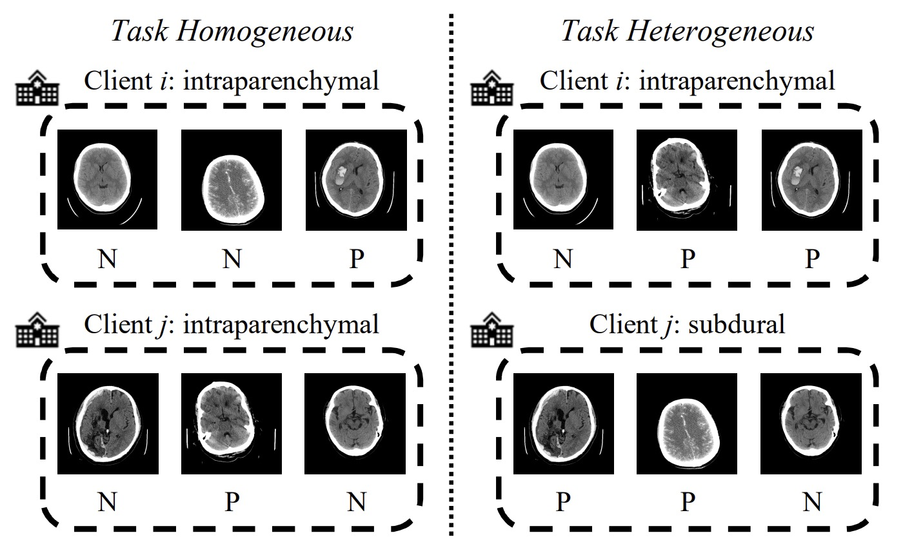
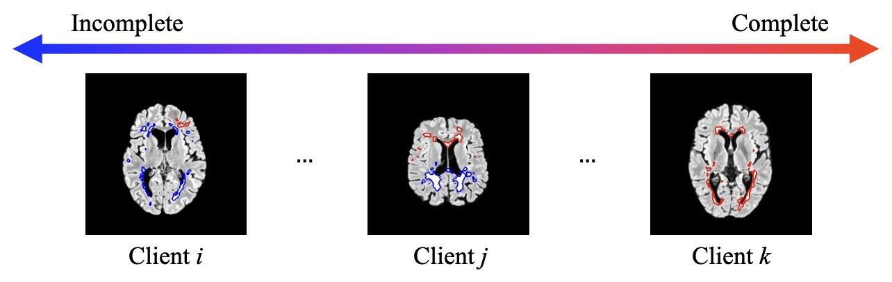

My research interests are centered around trustworthy machine learning, with a current emphasis on federated learning.
News
Publications

FedMLP: Federated Multi-Label Medical Image Classification under Task Heterogeneity.
Zhaobin Sun*, Nannan Wu*, JunJie Shi, Li Yu, Kwang-Ting Cheng, Zengqiang Yan.
Medical Image Computing and Computer-Assisted Intervention (MICCAI), 2024.
(CCF Rank B) (Early Accept, top 11% in all submissions)
[paper] [code]

FedIA: Federated Medical Image Segmentation with Heterogeneous Annotation Completeness.
Yangyang Xiang*, Nannan Wu*, Li Yu, Xin Yang, Kwang-Ting Cheng, Zengqiang Yan.
Medical Image Computing and Computer-Assisted Intervention (MICCAI), 2024.
(CCF Rank B) (Early Accept, top 11% in all submissions)
[paper] [code]
From Optimization to Generalization: Fair Federated Learning against Quality Shift via Inter-Client Sharpness Matching. Nannan Wu, Zhuo Kuang, Zengqiang Yan, and Li Yu.
International Joint Conference on Artificial Intelligence (IJCAI), 2024.
(CCF Rank A)
[paper] [code]
FedA3I: Annotation Quality-Aware Aggregation for Federated Medical Image Segmentation against Heterogeneous Annotation Noise. Nannan Wu, Zhaobin Sun, Zengqiang Yan, and Li Yu.
AAAI Conference on Artificial Intelligence (AAAI), 2024.
(CCF Rank A)
[paper] [code]
DTMFormer: Dynamic Token Merging for Boosting Transformer-based Medical Image Segmentation.
Zhehao Wang, Xian Lin, Nannan Wu, Li Yu, Kwang-Ting Cheng, Zengqiang Yan.
AAAI Conference on Artificial Intelligence (AAAI), 2024.
(CCF Rank A)
[paper] [code]
FedIIC: Towards Robust Federated Learning for Class-Imbalanced Medical Image Classification. Nannan Wu, Li Yu, Xin Yang, Kwang-Ting Cheng, and Zengqiang Yan.
Medical Image Computing and Computer-Assisted Intervention (MICCAI), 2023.
(CCF Rank B) (Early Accept, top 14% in all submissions)
[paper] [code]
FedNoRo: Towards Noise-Robust Federated Learning by Addressing Class Imbalance and Label Noise Heterogeneity. Nannan Wu, Li Yu, Xuefeng Jiang, Kwang-Ting Cheng, and Zengqiang Yan.
International Joint Conference on Artificial Intelligence (IJCAI), 2023.
(CCF Rank A)
[paper] [code]
Invited Talks
From Optimization to Generalization: Fair Federated Learning against Quality Shift via Inter-Client Sharpness Matching
Huazhong University of Science and Technology - China Optics Valley Morning Star Scholarship - Awarded to the top student among more than 400 undergraduates in the EIC, HUST, in 2021 (Top 0.25% award rate)
First Prize in the National Mathematics Competition for Undergraduate Students - Recognized nationally among peers, in 2020.
Zhuang Caifang & Zhuang Chongwen Scholarship - Awarded to one of the top students among over 200,000 high school graduates in Fujian Province, China, in 2018 (Top 0.1% award rate)